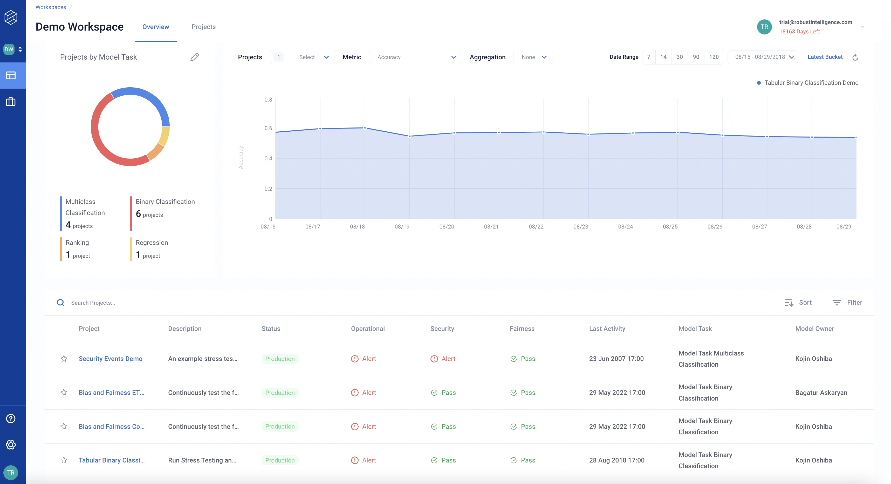

Workspace Overview
The Workspace Overview is the landing page of a workspace in Robust Intelligence, providing a summary with information for all the models and projects in the workspace.
Workspace Overview breakdown
Project Information Summary
Project information is also available in the table at the bottom of the page, which summarizes the following project details:
Project name
Description
Status (Production or Validation)
Operational Risk (Pass, Warning, or Alert)
Security Risk (Pass, Warning, or Alert)
Fairness Risk (Pass, Warning, or Alert)
Last Activity
Model task
Model owner
The table can be filtered or sorted to prioritize specific project information.
Configuring the ring chart
A ring chart at the upper left summarizes the projects in the workspace by their assigned tag, enabling projects to be grouped together. Projects can be grouped by:
Status
Operational Risk
Security Risk
Fairness Risk
Model task
Configuring the project metric chart
In the upper right, a project metric chart enables you to compare several aspects across projects.
From the Projects drop-down, select a set of projects to compare (up to 5). To compare projects, the projects need to have a shared metric and bin size.
From the Metric drop-down, choose a metric to compare.
From the Aggregation drop-down, select an aggregation type.
None performs no aggregation.
Sum, selected projects aggregates projects by the sum of the chosen metric.
Average, selected projects aggregates projects by the average of the chosen metric.
Select a time interval (Latest Bucket can be selected to show results only for the latest data bucket).
The project metric chart updates according to the selections.